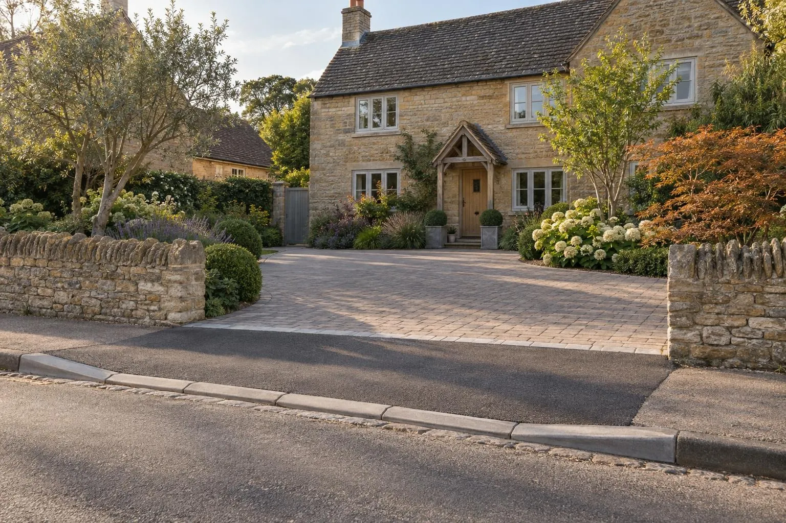

Dropped kerbs in Towcester
How dropped kerbs work in Towcester, what West Northamptonshire Council charges and requires, and how we build the driveway to meet it.
In Towcester, dropped kerbs are approved by West Northamptonshire Council and can only be built by a contractor on its approved list. The council decides within 28 days, the chosen contractor applies for the licence (£330 including inspection), and work usually starts two to three weeks later. You need a clear space at least 5m deep and 3m wide inside your boundary.
- Highway authority
- West Northamptonshire Council
- Council fees
- £330 licence and inspection fee
- Who builds it
- Only contractors on the council’s approved list
- Timescale
- Decision within 28 days; work usually 2–3 weeks after licence
Council fees checked October 2026. See West Northamptonshire Council’s own guidance.
Getting a dropped kerb approved in Towcester
- Step 1You apply to West Northamptonshire Council; the decision arrives by post within 28 days, with the list of approved contractors.
- Step 2You choose a contractor from that list, who submits their documents; the council issues the licence to them.
- Step 3The £330 licence and inspection fee is paid when the licence is applied for, by you or the contractor.
- Step 4Work usually starts two to three weeks after the licence is issued.
What West Northamptonshire Council looks for
- You need a clear area inside your property at least 5m deep and 3m wide.
- The access must be at least 10m from a junction or sharp bend.
- A second access is refused, as is one onto a lay-by or traffic calming, or within 1m of a tree trunk.
- Moving a street light or nameplate is possible, at your cost. A, B and C roads need planning permission first, and in a conservation area check with the town council.
Ground, drainage and conservation in Towcester
Most Towcester homes we see have suburban and new-estate frontages, which usually leaves room for an unobstructed space at least 5m deep and 3m wide that West Northamptonshire Council asks for. We measure it at the visit, before you pay any council fee.
The old town sits on a clay spur of Upper Lias between the Tove and Silverstone Brook, with limestone and Northampton Sand on the valley sides and boulder clay higher up. In the centre expect slow-draining clay; on the slopes drainage is better.
Towcester Conservation Area has a 1998 Article 4 direction on frontages to Watling Street, Moat Lane, Park Street and nearby streets. It removes permitted development for front extensions and alterations, roof changes, porches, gates, fences and walls, and painting. Front hard surfacing is not on the list.
The old core is surrounded on three sides by the Tove flood plain, and the Environment Agency runs a River Tove at Towcester flood warning area. You can check any address on the Environment Agency flood map.
Sources: Towcester Article 4 notice (London Gazette, 1998) · Environment Agency: River Tove at Towcester.
What we do
The crossing itself must be built by a contractor on the council’s approved list. We design and build the drive to meet the council’s space and visibility rules, and coordinate with the approved contractor so the crossing and drive meet at the right level.
- A measured drawing of the access and front garden
- Advice on width, visibility and space before you pay any fee
- The driveway or hardstanding behind the crossing
- Levels tied into the crossing, not left as a step
- Drainage so water stays off the footway
- A five year guarantee on our work, in writing
Dropped kerbs in Towcester: questions
How much does a dropped kerb cost in Towcester?
Who can build a dropped kerb in Towcester?
How long does a dropped kerb take in Towcester?
Do I need planning permission for a dropped kerb in Towcester?
What rules does my driveway have to meet in Towcester?
Do you cover Towcester?
The driveway behind it
Planning a dropped kerb in Towcester?
We will look at the frontage, check it against West Northamptonshire Council’s rules before you pay any fee, and price the driveway and crossing in one written proposal.